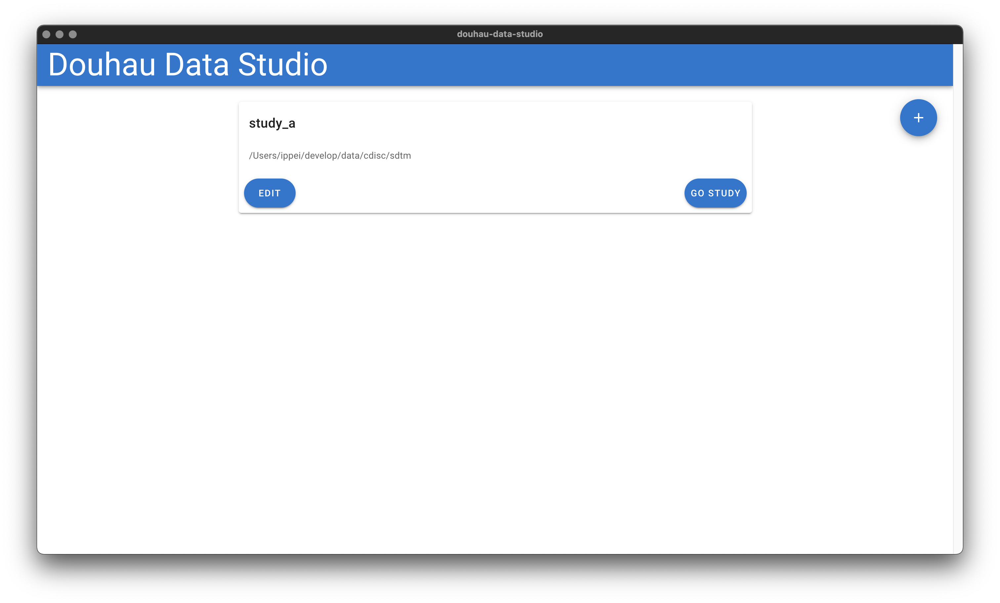
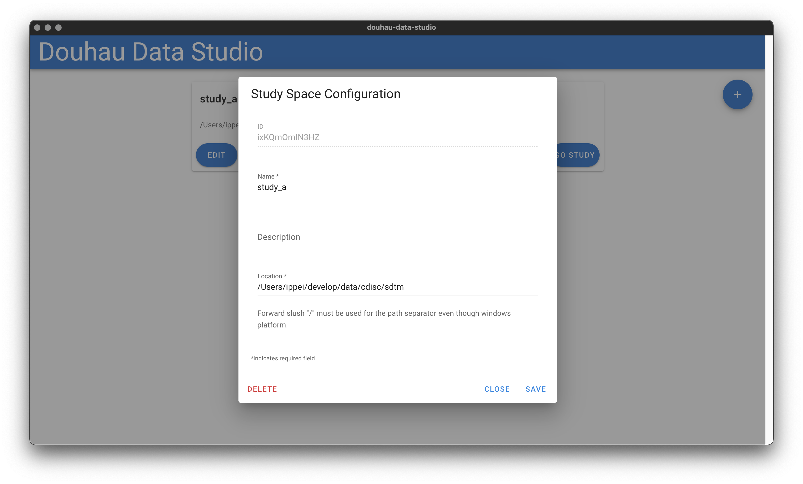

3 Gettig Started with Douhau Data Studio
3.1 Study Space Selecter
In Douhau Data Studio, to easy to switch the directory which includes SDTM datasets and define.xml, “Study Space” screen is provided. And “Study Space” screen is the initial screen after launching Douhau Data Studio.Add new, edit, and delete a study space that is available on this screen.

Figure 3.1: Study Space Screen
3.1.1 Add New Study Space
The first thing to browse SDTM datasets is to add the new study space.
Click the “+” circled icon, open the study space edit dialog.
Fill in each item, but “Description” is optional.
Notice for Windows Users: forward-slash(“/”) must be used as the path separator instead of backslash(“\”). In the Windows platform, “\” is commonly used for the path separator, however, it is prohibited to use “\” in Douhau Data Studio.

Figure 3.2: Study Space Edit Dialog
3.1.2 Launch the data browser
Click “GO STUDY” button, open the data browser.